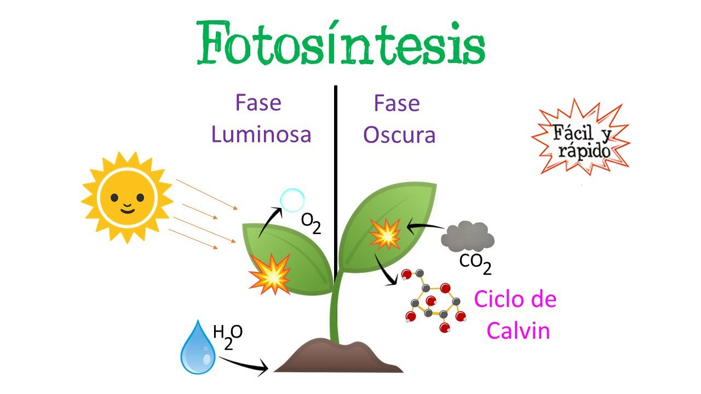
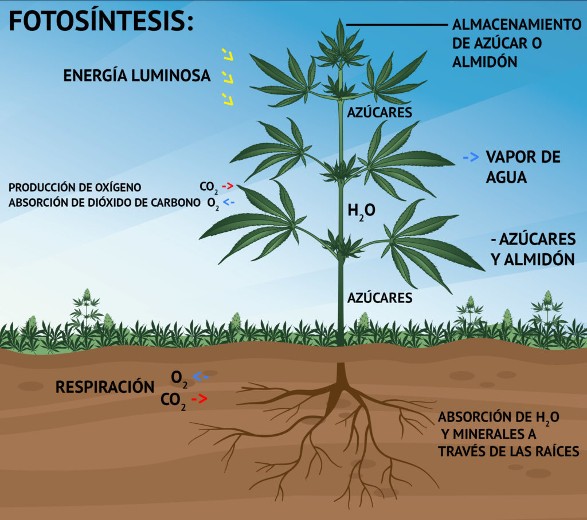
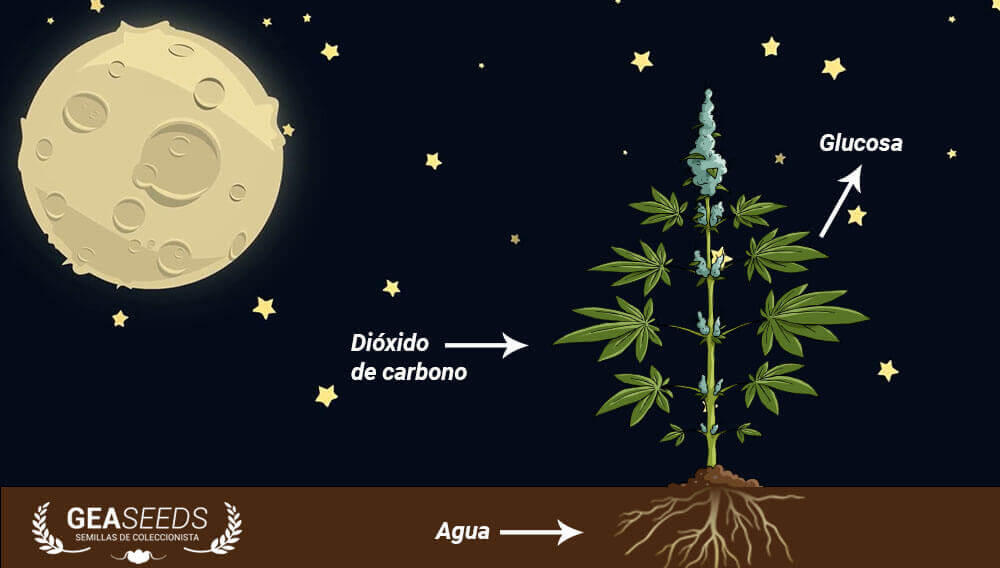

Fotosintesis
La fotosintesis se realiza en los cloroplastos, donde se encuentran los pigmentos capaces de captar y absorber la energia luminosa procedente del sol.Estos pigmentos capaces de captar y absorber la energia procedente del sol. Estos pigmentos son: Clorofila (verde), xantofila (amarillo) y carotenoides (anaranjados). Se trata de uno de los procesos anabolicos mas importantes de la naturaleza, ya que la materia organica sintetisada en su transucrso permite la realizacion de este. La fotosintesis es la fuente de la vida para la mayor parte de los seres vivos, ya que proporciona la energia indispensable para los distintos procesos vitales, ademas la fotosintesis produce la mayor parte del oxigeno de la atmosfera, esta se realiza en 2 etapas: Fase luminosa y fase obscura.

Fase luminosa. generacion de energia y oxigeno
Fase en donde se transforma la energia luminosa en quimica: que es usada por todos los seres vivos. Los vegetales son el primer y unico eslabon productor de la cadena trofica. esta fase depende de la luz que reciben los cloroplastos de las celulas vegetales que son captados por medio de la clorofila.
Esta energia luminica descompone el agua en oxigeno e hidrogeno, liberando el oxigeno y generandose 2 moleculas por medio del movimeinto de sus electrones de un nivel a otro por medio de sus electrones de un nivel a otro liberando energia para producir la molecula ATP y el poder reductor que es la molecula NADPH2 que aportaran a la fase siguiente energia quimica para la tranformacion de CO2 en glucosa(C6H12O6).

Fase obsura. Metabolitos y glucosa.
Es la etapa en donde ya no interviene la luz y las moleculas formadas en la fase luminosa (ATP y NADPH2 ) participan en la reduccion del dioxido de carbono (CO2) mediante una serie de reacciones el "ciclo de calvin" en donde se combina CO2 con RDP (difosfato de ribulosa) para formar PGAL (acido dosfoglicerido). se combina PGA con NADPH2 y ATP por lo que se libera agua (H2O), se forma PGA para la nutricion de la planta, se produce glucosa a partir del PGA, este azucar se disuelve en agua y recorre toda proporcionandole la agua necesaria para crecer.
Finalmente, se transforma materia inorganica en organica: a partir de la fuente de carbono del dioxido de carbono del aire. El oxigeno se libera como producto residual y lo usan la mayor parte de los organismos para la respiracion celular y se producen sustancias quimicas que sirven de alimento a los organismos.

Mas Informacion sobre el tema: